XKLUSIVE
THE UXK HEADLINER
The artist Trav has backed since 2015 — eleven years deep. St. Ann, Jamaica's own Broomy Boss: "Bad Youth" is the latest video, "Doom" with Popcaan is the biggest link-up of his career. Press play. This is the main entry.
NEW: BAD YOUTH · DOOM FT. POPCAAN · BAD DJ EP

$49 Limited Submission Drop

Worldstar & Q Live in Toronto

Believe In Us
UXK LIVE
CHECKING LIVE STATUS…CATCH ME LIVE
This is the main place you'll see me live online — streaming on Kick and on TikTok Live. Pull up, tap in, be part of the KONNECT in real time.
Search UrbanXklusives

XKLUSIVE ARTIST VS FEATURED ARTIST — WHAT'S THE DIFFERENCE?
NOV 6, 2026 · BY TRAV MANE
XKLUSIVE ARTIST is the top seal — UXK's exclusives only. Sense aka Newkid and Raw Hype Da Major wear it. Nobody else gets the seal.
FEATURED ARTIST is for artists who come through the website — features and $50 posts. Featured, not exclusive.
Everybody else is credited by name, under what they belong to, with no UXK tier label. A tier is earned, never handed out. LOG ON TODAY.
★ XKLUSIVE ARTIST = UXK EXCLUSIVES ONLY · FEATURED ARTIST = THROUGH THE WEBSITE
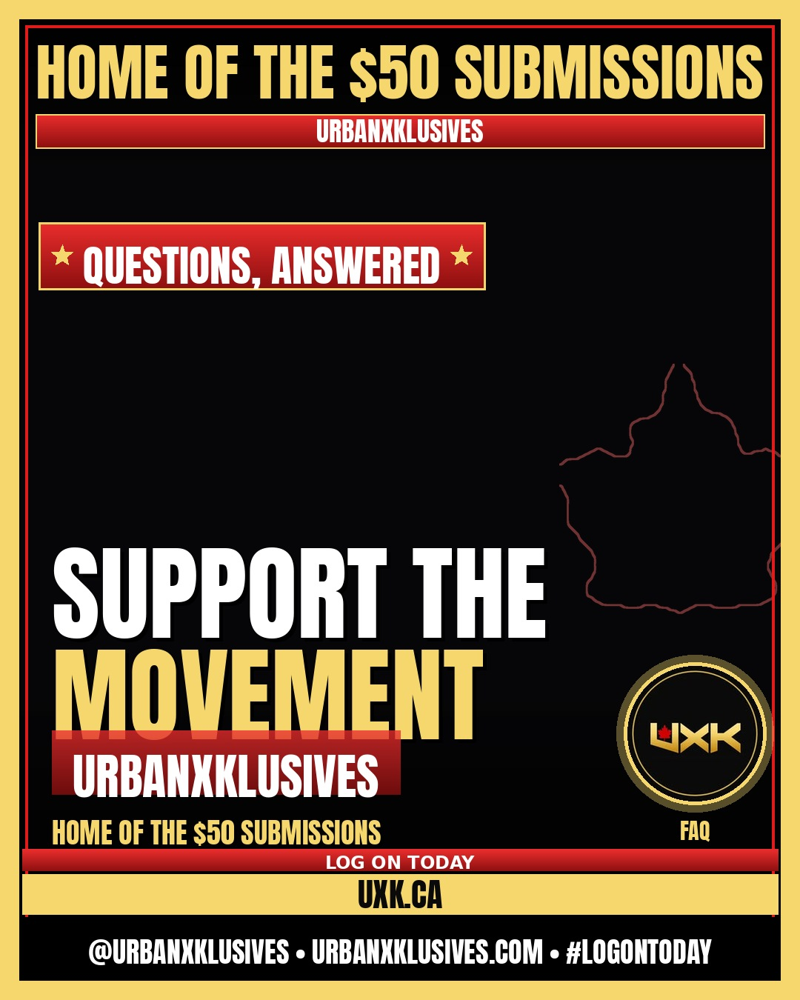
HOW CAN I SUPPORT THE MOVEMENT — AND HOW DO I CONTACT URBANXKLUSIVES?
NOV 6, 2026 · BY TRAV MANE
Back the next chapter: GoFundMe — UrbanXklusives, The Movement's Next Chapter, a $15,000 goal for the tapes, the tour & the merch. Share it, even if you can't give — every share moves the legacy forward for Tayvior, Tamiya, Zaire, and the wider family.
Or support by showing up: submit your music or art, share the posts, log on today. The movement runs on the people in it.
Contact: email urbanxklusives@gmail.com. Find UrbanXklusives on YouTube, Instagram, Facebook, and X — @urbanxklusives everywhere. LOG ON TODAY.
💛 $15,000 GOAL · TAPES, TOUR & MERCH · DONATE & SHARE
SOMBR — YOU ARE THE REASON TOUR LANDS IN TORONTO NOV 16
NOV 6, 2026 · BY TRAV MANE
Monday, November 16 — Scotiabank Arena, Toronto — sombr brings the You Are The Reason Tour to the city.
UrbanXklusives — home of the $50 submissions, pull up. LOG ON TODAY.
📍 SCOTIABANK ARENA · NOV 16 · 7 PM · TICKETS · #URXKLUSIVEKONNECT
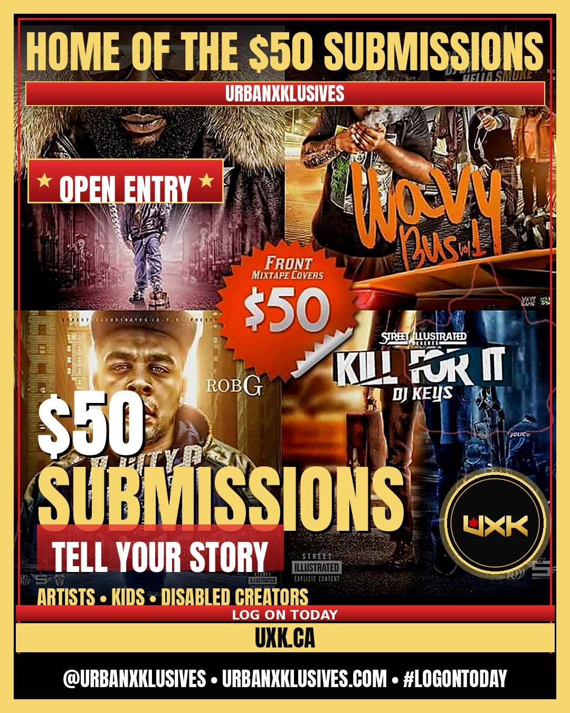
$50 SUBMISSIONS — OPEN ENTRY
NOV 6, 2026 · BY TRAV MANE
$50 submissions — open entry. UrbanXklusives is home of the $50 submissions. Open entry for people to gain exposure, to tell their story to the world. Artists, kids, and disabled creators — anybody with a story to tell.
Trav Mane built this since 2008 so the unheard get heard. The $50 is the website-submission entry fee only — it does not guarantee a mixtape slot. LOG ON TODAY.
🎤 $50 FLAT · OPEN ENTRY · ARTISTS, KIDS & DISABLED CREATORS · SUBMIT NOW
THE MOVEMENT'S NEXT CHAPTER — $15,000 FOR THE TAPES, THE TOUR & THE MERCH
NOV 6, 2026 · BY TRAV MANE
$15,000 for the tapes, the tour & the merch. 300 times $50 — that's the math of the goal. Every share moves the legacy forward for Tayvior, Tamiya, Zaire, and the wider family.
Trav says it plain: he's sick and tired of being sick and tired. Back the movement. LOG ON TODAY.
💛 $15,000 GOAL · TAPES, TOUR & MERCH · DONATE & SHARE
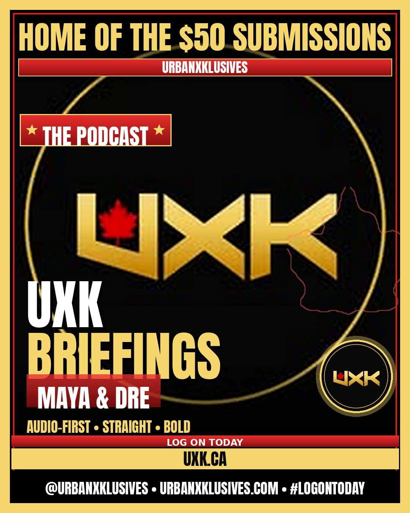
UXK BRIEFINGS WITH MISTER UXK — THE PODCAST
NOV 6, 2026 · BY TRAV MANE
Maya and Dre — straight, blunt, bold, no sugar. Audio first: breakdowns, explainers, and movement news in spoken form, because the update should reach you even when you can't read the screen.
Chat stays a link and a one-liner. LOG ON TODAY.
🎧 MAYA & DRE · AUDIO FIRST · #URXKLUSIVEKONNECT
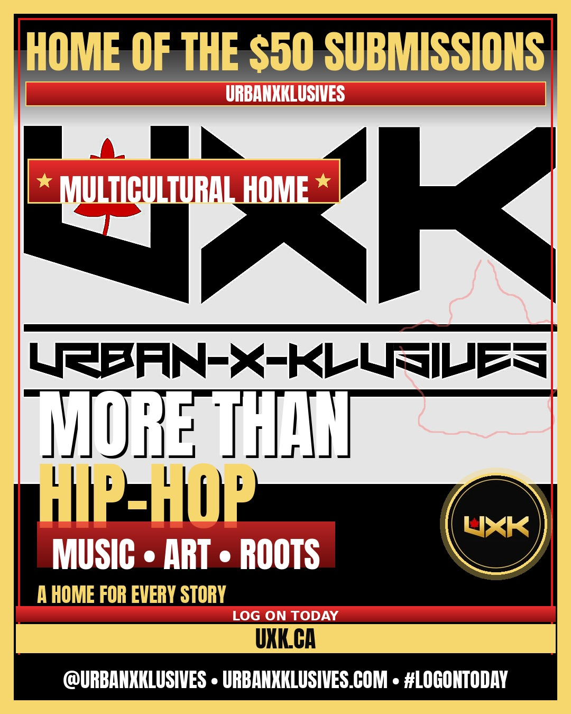
MORE THAN HIP-HOP — A MULTICULTURAL HOME FOR MUSIC, ART & ROOTS
NOV 6, 2026 · BY TRAV MANE
UrbanXklusives is a multicultural home for music, art & roots. Not hip-hop only — reggae, roots, and Indigenous sounds belong here.
A home for kids and disabled artists to share music and art. Communities Trav names: autism, Tourette's, schizophrenia — artists manifesting their dreams who deserve an outlet. Every story matters. LOG ON TODAY.
🌍 MORE THAN HIP-HOP · MUSIC, ART & ROOTS · #URXKLUSIVEKONNECT
🎃 CASPER TNG + 100BANDPLAN — HALLOWEEN SPECIAL 👻
OCT 31, 2026 · BY TRAV MANE
Casper TNG and 100Bandplan, Toronto. Two albums, one link-up, no tricks — just treats.
Casper TNG — Draft Day, out August 18, 2026: 14 tracks on Universal Music Canada, with A Boogie wit da Hoodie, M Huncho, OzzCash, K Money and 100Bandplan. Stream it: caspertng.lnk.to/draftday.
100Bandplan — Hell on Earth, out October 14, 2026: 13 tracks on PuzzL Music Collective / Universal Music Canada. Stream it: 100bandplan.lnk.to/hellonearth.
Watch the newest visual — Smiley, "Tripping His Cousin" featuring Casper TNG — and the link-up that started it all, "The Market":
UrbanXklusives — home of the $50 submissions, pull up. LOG ON TODAY.
🎃 HALLOWEEN SPECIAL · CASPER TNG · 100BANDPLAN · DRAFT DAY · HELL ON EARTH · #URXKLUSIVEKONNECT

WHAT IS THE $50 SUBMISSION — AND WHAT DO YOU GET?
OCT 27, 2026 · BY TRAV MANE
Got music the world needs to hear? Here it is, plain, no fine print. The $50 submission is the website-submission entry fee for a feature on UrbanXklusives — home of the $50 submissions, built since 2008, a multicultural home for music, art & roots.
Q: What do I get for $50? One of five feature lanes, $50 flat each. ARTIST SPOTLIGHT — full feature post: song/video, bio, photos, all your links. VIDEO PREMIERE — your video premiered with homepage placement. EVENT BLAST — your show, showcase or pop-up: dates, venue, tickets, lineup. SOCIAL PROMO PACK — promo run on @urbanxklusives Instagram and the Facebook fan page. BIO & EPK WRITE-UP — your story, told right, press-ready and posted. Every gig also gets blasted to our Instagram and Facebook audience with your tags, so the love comes straight back to you.
Q: Does the $50 guarantee a mixtape slot? No. The $50 is the website-submission entry fee ONLY. It does NOT guarantee a mixtape slot. Mixtape placements are offered separately during registration windows. That line matters, and it stays in every version of this post.
Q: How do I submit? Start at the $50 gigs post on this site (THE $50 GIGS) and pick your lane. No gatekeepers, no waiting months, no industry politics. You submit, we post, the world sees it.
And if you want to back the bigger push — the tapes, the tour, the merch — the fundraiser is live: gofundme.com/f/urbanxklusives-the-movements-next-chapter. Find the movement online: urbanxklusives.com, durag.store, and oemcentercaps.com. LOG ON TODAY. #LOGONTODAY #URXKLUSIVEKONNECT
🎤 $50 FLAT · 5 GIGS · NO GATEKEEPERS · SUBMIT NOW
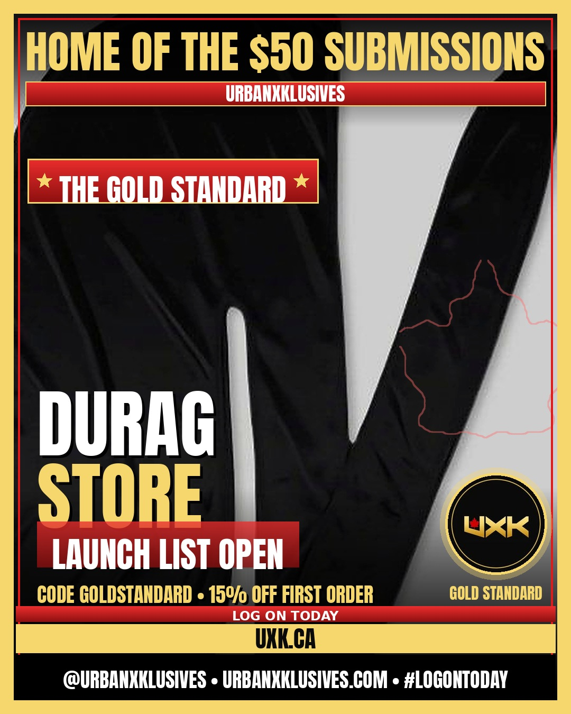
DURAG.STORE — THE GOLD STANDARD LAUNCH LIST IS OPEN 👑
OCT 25, 2026 · BY TRAV MANE
ACCESS YOUR EXCELLENCE. durag.store — Trav's own brand, black and gold — is opening its doors, and the launch list is open right now.
Straight up, so there's no confusion: the store isn't taking orders yet. This post is the launch list — get on it now, and when the shop opens, code GOLDSTANDARD locks 15% off your first order. Bundles for everybody — 3, 6, 12, 24, 50, 100, even thousands — plus bonnets, skull caps, bandanas, ski masks and more wave care on the way. Protect the crown.
Watch the commercial, join the list, and be first when the gold drops. THE GOLD STANDARD.
👑 DURAG.STORE · LAUNCH LIST OPEN · CODE GOLDSTANDARD · 15% OFF FIRST ORDER · #URXKLUSIVEKONNECT

JOURNEY — FINAL FRONTIER TOUR HITS TORONTO NOV 4
OCT 25, 2026 · BY TRAV MANE
An arena night for the ages. Wednesday, November 4 — Scotiabank Arena, Toronto — Journey brings the Final Frontier Tour to town, an evening with the band behind "Don't Stop Believin'".
One of the most sung songs on earth, live in an arena, in our city. The small-town girl, the city boy, the midnight train — everybody in the building will know every word. Don't stop believin'.
Tickets are on sale now via Ticketmaster. Pull up. UR XKLUSIVE KONNECT.
📍 SCOTIABANK ARENA · NOV 4 · 7:30 PM · TICKETS · #URXKLUSIVEKONNECT

TRIPPIE REDD — NON-DISCLOSURE AGREEMENT TOUR LANDS IN TORONTO NOV 10
OCT 25, 2026 · BY TRAV MANE
Tuesday, November 10 — HISTORY Toronto — Trippie Redd brings The Non-disclosure Agreement Tour to the city. Hip-hop and rap, up close, in one of Toronto's best rooms.
From "Love Scars" to the new era — Trippie built a whole sound out of melody and pain, and HISTORY is the kind of room where that sound hits different. Get there early. UR XKLUSIVE KONNECT.
Tickets are on sale now via Ticketmaster. Pull up.
📍 HISTORY TORONTO · NOV 10 · 7 PM · TICKETS · #URXKLUSIVEKONNECT

GIPSY KINGS FT. NICOLAS REYES — RUMBA FIRE IN NIAGARA FALLS NOV 15
OCT 25, 2026 · BY TRAV MANE
Sunday, November 15 — OLG Stage at Fallsview Casino, Niagara Falls — Gipsy Kings featuring Nicolas Reyes bring the rumba flamenca to Ontario. Guitars, passion, and "Bamboléo" — the sound that crossed every border without ever changing its language.
This is the multicultural lane UXK stands on: music that belongs to everybody, from the south of France to the Falls. One night, one stage, all dancing. UR XKLUSIVE KONNECT.
Tickets are on sale now via Ticketmaster. Pull up.
📍 OLG STAGE AT FALLSVIEW · NOV 15 · 7 PM · TICKETS · #URXKLUSIVEKONNECT

BOB MARLEY NIGHT FT. HOUSE OF DAVID GANG — BRAMPTON NOV 20
OCT 25, 2026 · BY TRAV MANE
Brampton, this one's home. Friday, November 20 — Spot 1 Grill & Music Hall, 289 Rutherford Road South — House of David Gang headlines Bob Marley Night. Doors 7 PM, show 8:30 PM, all ages, in an intimate 250-cap room.
Toronto's own roots reggae band — a sound that pays homage to the classic '70s and '80s Jamaican sound with a modern Canadian feel — celebrating the music of the immortal Bob Marley. This is roots, culture, and community, right here in Brampton. UR XKLUSIVE KONNECT.
A live video of the band above — get a feel for the stage, then pull up in person. Tickets are listed at $19.15 CAD via TicketWeb.
📍 SPOT 1 GRILL & MUSIC HALL · NOV 20 · 8:30 PM · ALL AGES · TICKETS · #URXKLUSIVEKONNECT

TRAP JACKSON — "WHIP IN THE KITCHEN" FT. ZIGGY MASERATI — THE VOL. 2 SHOUT-OUT, BLENDED 🎤
OCT 22, 2026 · BY TRAV MANE
THE SHOUT-OUT MEETS THE SONG. Back when UR XKLUSIVE KONNECT Vol. 2 was being built, Trap Jackson — I Am Trap Jackson — cut a shout-out for the tape with Trav Mane: UrbanXklusives × The Grynd Report presenting, Montana Way Music in the building. That Short lived on the channel. The song lived on YouTube. Tonight they finally live in one piece.
THE BLEND. Trav's shout-out rides the head of the track — the music tucked underneath the voice, the way a drop is supposed to sit — then "Whip in the Kitchen" ft. Ziggy Maserati runs full. The Vol. 2 cover floats over the whole thing, faded. This is the visual mixtape working exactly like it was designed to.

THE RECORD. "Whip in the Kitchen" — Trap Jackson ft. Ziggy Maserati, Montana Way. Kitchen to corner store, the video moves the way the record sounds. The original official video is right here — run it up on Montana Way Movies too.
🎧 FULL AUDIO — FREE DOWNLOAD. The complete blended track, mastered for the tape: ⬇ DOWNLOAD "WHIP IN THE KITCHEN" (MP3) — because this one is going on UR XKLUSIVE KONNECT Vol. 2.

🎧 "WHIP IN THE KITCHEN" — TRAP JACKSON FT. ZIGGY MASERATI · UR XKLUSIVE KONNECT VOL. 2 · MONTANA WAY MUSIC · URBANXKLUSIVES × THE GRYND REPORT · #URXKLUSIVEKONNECT

MILLY McJAGGURR — THEN AND NOW: "BOUT THAT" TO "ROAD TRIP" — NEW SINGLE OUT NOW 🚗
OCT 21, 2026 · BY TRAV MANE
THEN AND NOW. New heat first — because that's how family moves. Milly McJaggurr — Robert Foy to the paperwork, Westside Milly to the streets — Fayetteville, North Carolina. A UR XKLUSIVE KONNECT Vol. 2 artist with a brand-new single out right now. The circle kept evolving.
NOW — "ROAD TRIP." Milly just dropped "Road Trip" ft. Kayron (prod. TheyCallmeFinesse — Shawn Finesse on the boards), official video out now. Fayetteville to wherever the road goes — this is a Vol. 2 spitter in 2026 form, still applying pressure, still putting his city on his back. Run it up.
THEN — "BOUT THAT." Go back to the tape. "Bout That" (prod. 1chedda) rides on UR XKLUSIVE KONNECT Vol. 2 — Milly in the yellow ski mask, his signature masked look, the official video still turning heads. That's the THEN. The Road Trip is the NOW. Same artist. Bigger map.
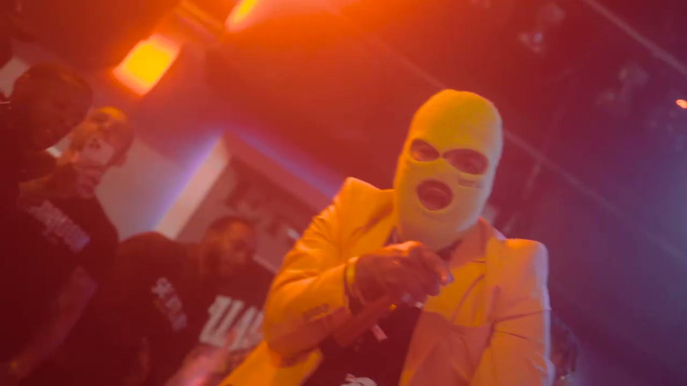
🎧 "ROAD TRIP" FT. KAYRON (PROD. THEYCALLMEFINESSE) — OUT NOW · "BOUT THAT" (PROD. 1CHEDDA) · UR XKLUSIVE KONNECT VOL. 2 · FAYETTEVILLE, NC · #URXKLUSIVEKONNECT
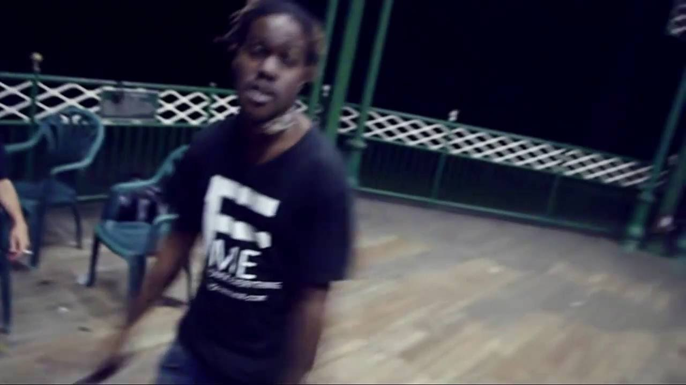
SENSE aka NEWKID — THEN AND NOW: TORONTO TO CALIFORNIA + HAPPY BIRTHDAY, MICHAEL BOURNE 🎂
OCT 21, 2026 · BY TRAV MANE
THEN AND NOW. This is what the KONNECT looks like a decade later. Sense aka Newkid — Michael Bourne — Toronto's own. We move in circles that are evolving, not revolving, and this man's circle kept evolving.
THEN — TORONTO. February 2016, UrbanXklusives blogged his "Nobody" visual — we saw it early, because that's what we do. Then he recorded "Still Living" (Prod. Lasik Beats) — track 9 on UR XKLUSIVE KONNECT Vol. 2. Toronto is where it started.
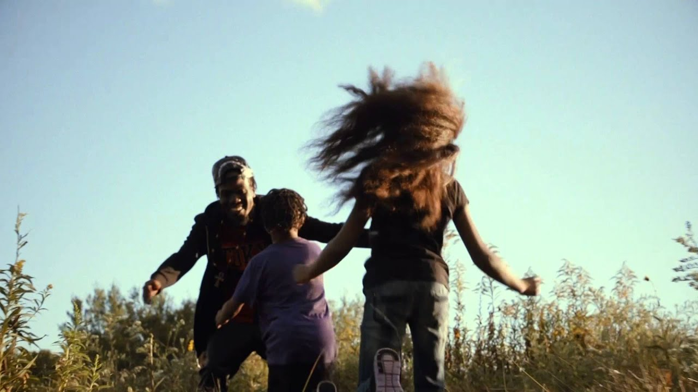

NOW — CALIFORNIA. Sense runs his own imprint now — Family Money Everything. FME. #FMEforever — his house, his rules. "Studio Days with Compton Menace" put him in rooms on the West Coast, and the latest upload "HALLELUJAH #FMEforever" says exactly where his head is at. Same artist. Bigger map.


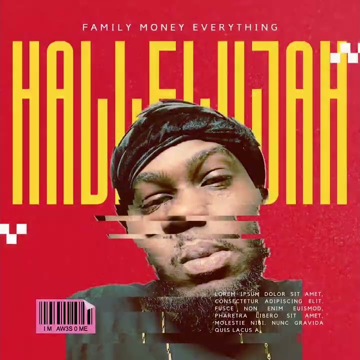
🎂 HAPPY BIRTHDAY, SENSE. Today — October 21 — is his birthday, so we cut a birthday flick for family. From Toronto to California, from the Vol. 2 sessions to FME — happy birthday from Trav Mane and the whole UXK family. Still living. Still building. 🎉
★ SPECIAL EDITION BIRTHDAY CARD PACK. We don't do regular over here. For Sense's birthday we pulled a limited special edition — six magazine cards, one run, and card #1 is the holographic: the chase card, gold foil, the one everybody wants in the pack. The set runs his whole story — Toronto then, Family Money Everything now. Pulled for family, on his day. When it's gone, it's gone — nothing less. ★


🎧 "STILL LIVING" (PROD. LASIK BEATS) · UR XKLUSIVE KONNECT VOL. 2 — TRACK 9 · FAMILY MONEY EVERYTHING · #FMEFOREVER · #URXKLUSIVEKONNECT

TONY MOXBERG — THEN AND NOW: YONKERS TO THE WORLD
OCT 21, 2026 · BY TRAV MANE
THEN AND NOW. That's Trav and Tony Moxberg up top — back then, from Trav's own archive. Yonkers, New York. D-Block affiliate. Black Cloud Ent — his own house. This ain't a new link-up; this is family with history.
Tony's pen been certified by the heaviest names in the culture — collaborations with Jadakiss, Sheek Louch, Benny The Butcher and Styles P. And when UR XKLUSIVE KONNECT Vol. 2 was built, his "For The Papper" ft. Styles P made the tape. Real ones on real records.
NOW. Fast-forward — Tony is still applying pressure. "Shawty Got Potential" ft. Ghostface Killah & Sheek Louch (Nov 2025) — Wu-Tang and The LOX on one record with a Yonkers spitter who never left. Then and now, the pen don't miss.
🎧 "FOR THE PAPPER" FT. STYLES P · UR XKLUSIVE KONNECT VOL. 2 · BLACK CLOUD ENT × D-BLOCK · #URXKLUSIVEKONNECT

LITO — THEN AND NOW: THE 2015 FRONT PAGE TO KONNECT VOL. 2
OCT 21, 2026 · BY TRAV MANE
THEN AND NOW. It's Lito's World — and in 2015, his world ran straight through the UrbanXklusives front page. Rob Dollaz submitted Lito's single "Usually" to UXK, and it landed up top — BREAKING NEWS banner, front page, the screenshot still sitting in the archive a decade later. Proof don't expire.

And Lito showed love right back — his own words, 2015: "I appreciate @urbanxklusives for featuring my latest single, #Usually." That's the KONNECT working exactly how it's supposed to work — artist to platform, platform to artist, receipts kept.
NOW. The story didn't end at the front page. "Miklo" — Lito ft. Baygo — rides on UR XKLUSIVE KONNECT Vol. 2. Lito and Rob Dollaz move under one flag: #Atlantafornia. From a 2015 submission to a spot on the tape — circles that are evolving, not revolving.
🎧 "MIKLO" — LITO FT. BAYGO · UR XKLUSIVE KONNECT VOL. 2 · "USUALLY" SUBMITTED BY ROB DOLLAZ, 2015 · #ATLANTAFORNIA
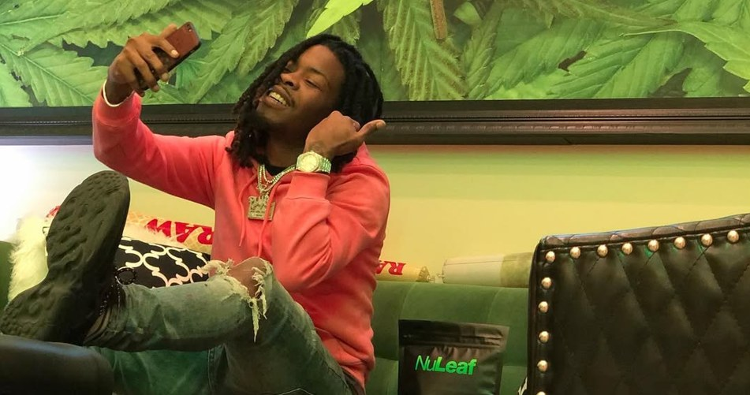
YOUNG DUCE MILLIONS — CATCHING UP WITH MIAMI'S OWN @YOUNGDUCE305
OCT 16, 2026 · BY TRAV MANE
Miami. The 305. That's where this one comes from — Young Duce Millions, repping Florida with the whole package: the music, the motion, the mindset.
Trav caught up with him for the UXK vlog back in the day — "Catching Up w/ Miami Artist @YoungDuce305" — and the link-up was real. This is what the KONNECT is: city to city, artist to artist, no gatekeepers.
Young Duce has been building — shows, hosting, verses, photoshoots. Booking line is open: (305) 990-6561. If you're in Miami and you're serious, that's the number.
To every young artist reading this: this is the blueprint. Get in front of the camera. Tell your story. Let the world catch up with you. $50 submissions. Get featured. Get heard worldwide. #URXKLUSIVEKONNECT
📸 PHOTO: YOUNG DUCE MILLIONS — VIA INSTAGRAM @YOUNGDUCE305 · URBANXKLUSIVES

MÉTIS ARTIST ON THE NATIVE SUPREME COURT DECISION: THEY RULED ON MY TERRITORY — CANADA STILL SAYS I DON'T EXIST
OCT 15, 2026 · BY TRAV MANE
October 9, 2026. The Supreme Court of Canada decided R. v. Cope — 5 to 4. First time ever the highest court set the rules for sentencing when the offender AND the victim are Indigenous.
The man at the center of it: Harry Arthur Cope. Mi'kmaq. Nova Scotia. My claimed Eastern Woodlands territory.
Justice O'Bonsawin wrote it plain: judges now have to meaningfully listen to the community — sentencing circles, the Mi'kmaw Legal Support Network. The circle spoke, the lower court brushed past it, and the Supreme Court said that was the error. The community's voice carries weight inside a courtroom now. That is law.
Now hold that next to my life.
Canada tells me my Nova Scotia nation isn't recognized. The Métis Nation of Ontario won't recognize it either. My dad is not on my birth certificate — that is the paper wall standing between me and my status. I have been fighting this fight in the open: Jordan's Principle says no jurisdictional gaps, no child left in limbo. Yet here we are.
So let me get this straight. The highest court in the land just built law around Mi'kmaq community processes — the community's voice, the circle, the nation's role. And the same country's system looks at me — Eastern Woodlands, Nova Scotia roots — and says my nation does not exist?
Same territory. Same conversation. I am not a side story to this ruling. I am standing inside it.
I am sick and tired of being sick and tired. So I am telling my story until the paper catches up with the truth.
🎧 HEAR THE UXK BRIEFING — Maya & Dre break it down in 2.5 minutes.
📸 PHOTO: SUPREME COURT OF CANADA — VIA CANADIAN LAWYER · URBANXKLUSIVES
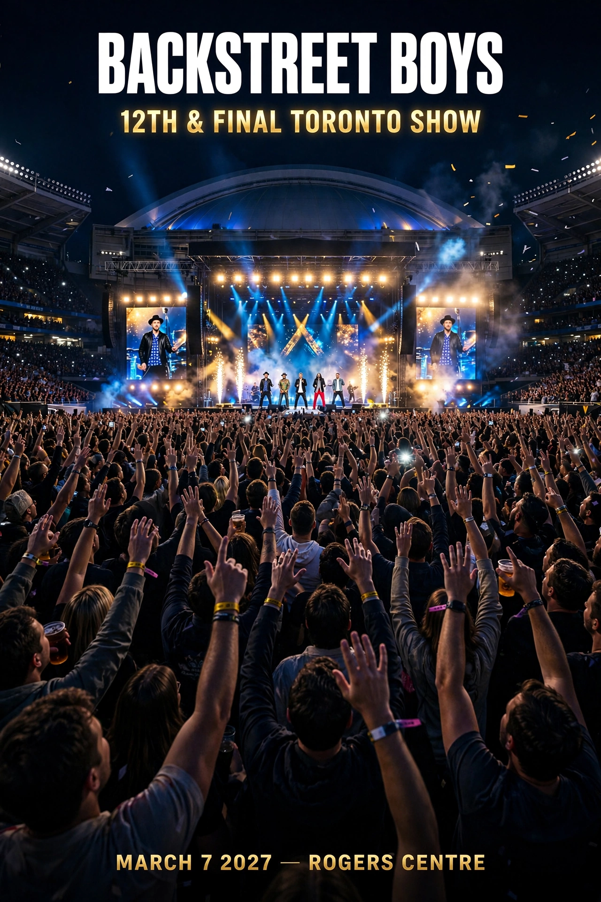
BACKSTREET BOYS ADD 12TH AND FINAL TORONTO SHOW — MAR 7, 2027
OCT 14, 2026 · BY TRAV MANE
One final show. The Backstreet Boys Toronto residency now closes Sunday, March 7, 2027 at Rogers Centre — a 12th and final date added by demand.
General sale starts Wednesday at 10 AM ET. If you missed the other eleven, this is the last call. These shows move fast.
UrbanXklusives is building out full 2027 Toronto concert coverage — every major show, every on-sale date, right here. Log on today.
📍 ROGERS CENTRE · MAR 7, 2027 · URBANXKLUSIVES
YOU DON'T NEED TO BE IN SCHOOL TO GET FUNDED — 16 GRANTS FOR ARTISTS, YOUTH & DISABLED CREATORS
OCT 13, 2026 · BY TRAV MANE
🎵 SOUNDTRACK: Tony Moxberg ft. Styles P — "For The Papper"
Real talk. Everybody thinks you need to be in school to get money for your passion. That's not true. There are real grants out here for independent artists, young creators, and disabled artists — no classroom required. We pulled together 16 verified programs, checked against official sources, so you don't have to dig. Here's the breakdown:
🎨 ARTS GRANTS
OAC Touring and Circulation — up to $30,000. Ontario artists touring outside their home city. Deadline Oct 22.
OAC Artists in Communities and Schools — up to $7,500. Artist + community partner co-designing a project. Deadline Oct 15.
OAC Media Artists Creation — $10,000–$40,000. Video, film, audio art. Visual mixtapes count. Next round March.
Canada Council — Explore and Create — up to $25,000. All disciplines, all Canadians. Multiple deadlines a year.
Canada Council — Creating, Knowing and Sharing — up to $50,000–$100,000. First Nations, Inuit, Métis artists. This is the big one for Indigenous creators.
Canada Council — Micro-Grants — $10,000 per application. Training, networking, accessibility. Deadline Dec 31.
🎵 MUSIC GRANTS
FACTOR Artist Development — $5,000 for a year of recording, touring, showcasing, video, marketing. Rolling — apply anytime.
FACTOR Juried Sound Recording — up to $25,000 for a single or EP. Covers half your recording costs.
SOCAN Foundation — TD Indigenous Songwriter Award — $10,000 cash. Indigenous songwriters, no age limit.
🔥 YOUTH GRANTS
Laidlaw PopUp Grants — up to $5,000. Ages 14–30, Ontario. Priority for Black-led, Indigenous-led, queer-led projects.
Laidlaw Indigenous Youth Fund — up to $30,000/year. Indigenous youth-led groups, leaders 35 and under.
ArtReach — up to $15,000. ⚠️ Toronto only — Brampton heads, this one's not for you, but now you know it exists.
♿ DISABILITY FUNDING
OAC Accessibility Fund — up to $5,000. Rolling deadline. Pairs with any OAC grant — covers your accessibility costs.
Canada Council Application Assistance — they will pay someone to help you fill out the application. No excuse not to apply.
🏘️ COMMUNITY PROJECT GRANTS
Ontario Trillium Foundation — Seed Grants — $10,000–$100,000. Pilot new community programs through a nonprofit partner.
OTF Youth Opportunities Fund — up to $600,000. For nonprofits serving youth facing systemic barriers.
This is what the movement is about. The money is out there — you just have to know where to look. Now you do. Share this with every artist, every young creator, everybody who thinks their passion can't pay. UR XKLUSIVE KONNECT. #URXKLUSIVEKONNECT
💰 16 GRANTS · VERIFIED OCT 13, 2026 · SHARE WITH YOUR PEOPLE · #URXKLUSIVEKONNECT
Get drops, vlogs, and exclusives first. One email when it drops — no spam, ever.
SIMILAR STORIES
- THE XKLUSIVE CIRCLE — MEMBERSHIP IS OPENpromo
- JESSIE REYEZ COMES HOME — A LITTLE VENGEANCE TOUR FINALE AT THE COLISEUMevents
- XKLUSIVE — "STRENGTH" — NEW TRACK OUT NOWmusic
- DURAG.STORE — ACCESS YOUR EXCELLENCE.brands
- MANEESH ON THE BEAT, SHABANG — TRAV WAS IN THE ROOMstories
- BANDLAB SPOTLIGHT: YOUR BEDROOM COULD BE NEXTpromo